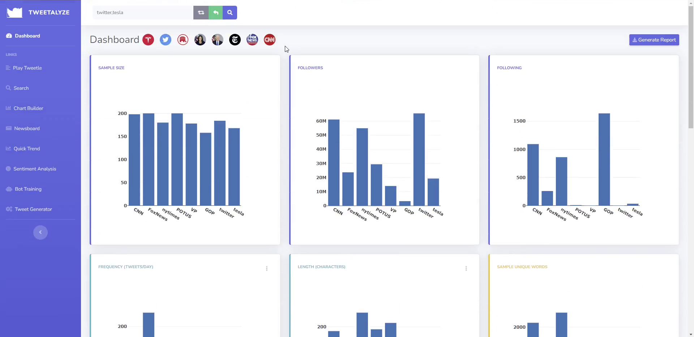

Computer Engineer | Launch AI Demo
Applied AI Expert | Watch Interview
Data-Driven Leader | Read Case Study
Growing up along the beautiful Jersey Shore, I attended the Marine Academy of Technology and Environmental Science (MATES), competed in robotics, and earned my Eagle Scout award. While at Stevens Institute of Technology, I led the Game Development Club, served on the student senate, and traveled to perform comedy. In my first few years with Wiley's CS Technology & Solutions team, we relaunched the Service Agent Console, integrated Cloud Telephony & Omni-Channel work management, and deployed several Help sites.
As a member of Wiley's Customer Service Leadership Team, I sought to enable seamless customer experiences while optimizing efficiency. Starting in 2019, we deployed Deterministic AI tools to streamline agent workflows and provide basic self-service capabilities via chatbot. Similarly, our Personalized Embedded Support solution proactively suggests answers to common questions based on the customer's current circumstance. We also leveraged other technologies, such as Robotic Process Automation (RPA) and Optical Character Recognition (OCR), to reduce repetitive tasks and keep agents focused on helping customers. In 2023, we started using Generative AI to further optimize processes and create grounded, contextual self-service interactions. Based on my history of driving improvement within Wiley's Customer Service organization, I have now joined a new team focused on implementing these efficiencies across the company.
Dreamforce (September 2024): Agentforce Keynote: Build the Future with AI Agents
Dreamforce (September 2024): 3 Ways AI Makes Service Frictionless and Fun (x2)
World Tour NYC (April 2024): Learn How Wiley Partners with Salesforce (Interview)
Salesforce Webinar (August 2023): The Next Frontier of Customer Service: Generative AI
SOCAP International Spring Symposium (May 2024): AI in Customer Service
World Tour NYC (April 2024): Your Guide to Become a Salesforce Expert
Wiley Webinar Series (January & February 2024): Using AI to Improve the Customer Experience (Parts 1 & 2)
World Tour NYC (December 2022): Scale Service and Reduce Costs with Automation and AI
Dreamforce (September 2022): Unlocking the Power of Conversational AI and Automation
Dreamforce (September 2022): Smarter, More Proactive Service with Service Cloud Einstein
TechTarget (November 2024): Salesforce Agentforce: An answer in search of a question?
Business Wire (October 2024): Salesforce’s Agentforce Is Here: Trusted, Autonomous AI Agents to Scale Your Workforce
Mi3 (September 2024): Salesforce CEO Marc Benioff promises an end to ‘DIY AI,' taps frustrations over complexity. "You could feel customers exhale" says Constellation's Liz Miller, "Now he needs to deliver."
Diginomica (September 2024): Dreamforce 24 - how do you stop your AI behaving like a wayward toddler? Good parenting is key!
Diginomica (September 2024): Dreamforce 24 - Wiley turns the page on productivity gains with Agentforce
Axios (September 2024): Tech industry rushes to give AI greater decision-making abilities
Financial Times (September 2024): Salesforce Unveils Agentforce–What AI Was Meant to Be
Salesforce Customer Story (Updated September 2024): Wiley sees 213% return on investment with Salesforce.
Salesforce Promo Video (August 2024): Humans with agents drive customer success
In my current role, I partner with leaders across Wiley to enable productivity through AI and automation. This involves researching emerging methods, prototyping applications, delivering executive briefings, prioritizing a roadmap of ROI-driven initiatives, and aligning resources to develop scalable solutions. My team also provides support with process mapping, improvement design, and technology delivery.
During this transition period, I established the AI arm of Wiley's strategic new Process Transformation & Continuous Improvement organization while wrapping up ongoing efforts. Under my continued leadership, Wiley was among the first to deploy a Generative AI Service Agent on the Agentforce platform, leading to an over 40% improvement in case resolution compared to our old chatbot. My new team and I delivered additional RPA solutions, including AI Vision-powered order automation, and provided coaching on various AI initiatives.
As a member of the Leadership Team, I oversaw innovation strategy for Wiley's Global Customer Service organization (Customer Care, Technical Support, Sales Support). My distributed team owned product roadmaps and application support for CRM, Help, RPA, Survey, and QA technologies. In partnership with leaders across Research, Learning, and Operations, we designed solutions to improve customer experiences and optimize process efficiency. Generative AI projects included Reply Suggestions, Case Summarization, and Language Translation. Other project highlights included Order Entry Automation for multiple business streams, migration to a custom-built Quality Assurance Platform, and deployment of SMS support and blended-channel enhancements to our Omni-Channel system.
As the Product Manager for CRM, Help, and Contact Channel technologies, I crafted our vision and roadmap as well as supported BAU operations. I focused on using AI, automation, embedded support, and connected data to optimize both the customer and agent experience. Key projects included Embedded & Personalized Self-Service, Deterministic AI Case Classification & Article Recommendations, Application Data Integration for Embedded Channel Contacts, Incident Management Integration, and Remote Support.
As a Certified Scrum Product Owner for the CRM agile team, I collaborated with both business and technology stakeholders and was responsible for executing key initiatives from problem definition to continuous improvement. These initiatives included launching several self-service support communities, integrating AI chat tools, and implementing chatbot and embedded chat services.
As a part of my first corporate position, I enjoyed a variety of responsibilities including escalations handling, UAT design and execution, and business process improvement. In service of these responsibilities, I supported both internal and external platform launches as a super user and primary escalation point. Later in my tenure, I shifted towards project work and played a significant role in the delivery of our Omni-Channel chat and softphone implementations.
Everyone starts somewhere, and during my time at The Innovation University ® I became the Founder and CEO of a game development startup. Our three-person crew worked with various outside partners on several projects, but ultimately focused on one mobile application for Android which offered challenging puzzles for players to conquer. The puzzles in our games were not the only challenging part of managing a startup, and today we are able to appreciate the lessons learned as we bring our experience to new places.
In contrast to my day-job, I spend evenings working on side projects where I get to be both designer and developer. As the former President of the Stevens Game Development Club, I initially groomed my passion for programming through the unique lens of game design and later switched my focus to web development.
Q AI Apps is a collection of apps built on popular AI models. While Q Web Designer and Q Product Owner are focused on productivity by making it easy for anyone to draft UI concepts and user stories, Q Chat Sim and Q Story Teller highlight more entertaining applications of Generative AI. Check out my Portfolio Assistant and Mystery Game demos to see how this technology can be used.
Tweetalyze was a set of data analysis and visualization tools developed using the Twitter API. Since Twitter (𝕏) has made substantial changes to their API offering, the Tweetalyze suite is essentially defunct.
Tweetle - The final addition to the Tweetalyze suite, Tweetle is a Wordle-inspired, Twitter-themed guess-the-number game.
Tweetalyze Dashboard - The third iteration of a long-term passion project, this tool allows users to query tweet data from Twitter to build and visualize their own pre-cleaned data sets.
Tweetalyze Chart Builder - In scenarios where the pre-fabricated charts on Dashboard are not appropriate, Chart Builder enables approachable, visual analysis of tweet samples. You can pivot on several parameters and add insights like bell curves and regressive trend lines.
Tweetalyze Quick Trend - In recognition that some users may not need Dashboard's full feature suite, this page is a faster way to visualize and drill-down on Like and Retweet stats. Following this same philosophy, I also created an simple page to analyze and trend tweet sentiment.
Tweetalyze Search - Unlike the numerically-focused tools in the Tweetalyze family, Search provides a simple interface for users to perform a fuzzy search on recent tweet text and displays results in order of relevance. Search was intended to be a more practical successor to Ask a User, a crude implementation of BERT NLP using Google's TensorFlow library. For users who are less familiar with Twitter, Newsboard provides a pre-curated sample of tweets and topics from major media outlets to search.
Tweetalyze Fake Tweet Generator - As a Computer Engineer, I never had the chance to learn about Markov chains like my Computer Science friends. To address this gap, I leveraged my existing Twitter API server and practiced implementing a probablistic Markov model. After some minor revisions, I created the Tweetalyze Bot: a comical demonstration of model training that allows users to add multiple learning sources.